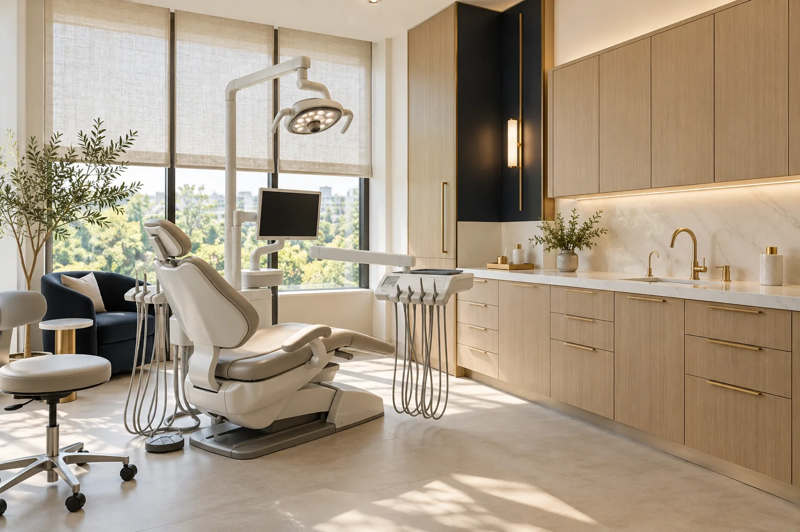

Odontologia preventiva
Atenção à rotina de cuidado e espaço para conversar sobre a saúde bucal.
Odontologia com atenção ao detalhe
Uma conversa tranquila, um plano individual e tempo para entender o seu momento.
Consultório fictício · Apresentação demonstrativa

Escuta antes do planejamento
Cuidado individual
Clareza em cada etapa
Especialidades
Conheça as áreas de atendimento apresentadas pela Odonto Prime. O planejamento começa por uma avaliação individual.
Atenção à rotina de cuidado e espaço para conversar sobre a saúde bucal.
Informações sobre alinhamento e planejamento, apresentadas de forma clara.
Uma conversa sobre necessidades, possibilidades e etapas do atendimento.
Planejamento do cuidado a partir de uma avaliação individual.
Perfil profissional fictício
Na proposta da Odonto Prime, o cuidado começa pela conversa. Marina Alves é a personagem fictícia que representa uma atuação próxima, com atenção às dúvidas e ao planejamento de cada etapa.
Personagem da demonstração
O consultório
Luz natural, materiais acolhedores e organização. Uma proposta de espaço que deixa a conversa e o cuidado no centro.
Um lugar para chegar e se sentir à vontade.
Estrutura apresentada de forma clara e próxima.
Diálogo antes de cada etapa do planejamento.
Informações para você
A proposta começa com escuta e avaliação individual. Neste modelo, os botões mostram apenas uma simulação de agendamento.
Você pode conhecer as áreas de cuidado e conversar sobre o atendimento mais adequado. Na versão demonstrativa, nenhuma consulta é marcada.
Esta marca é fictícia. O endereço aparece como “a definir” para ser personalizado com as informações do cliente.
Não. Marca, profissionais, serviços, horários e imagens são ilustrativos. Esta é uma demonstração de site criada pela TS Digital.
Vamos conversar?
Agendamento demonstrativo. Nenhuma consulta será marcada.
Unidade demonstrativa. Endereço a definir.